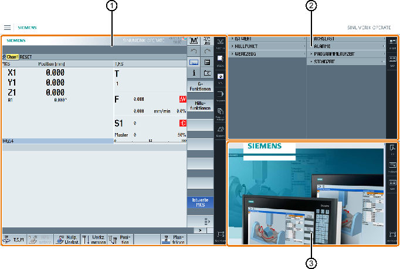

Die Standard-Auslieferung des SINUMERIK Operate Display Manager bietet die Möglichkeit zwischen 3-Anzeige-Bereiche und 4-Anzeige-Bereiche zu wählen.
① | SINUMERIK Operate mit Navigationsleiste zur Umschaltung des Bedienbereichs |
② | Anzeige-Bereich für Standard-Widgets |
③ | Anzeige-Bereich für Applikationen (z. B. PDF) |